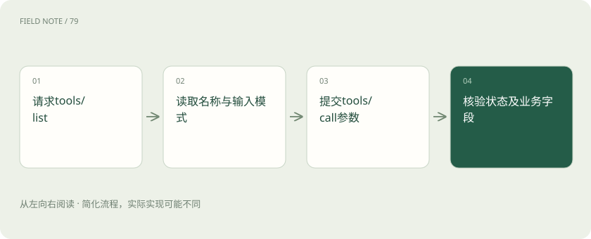
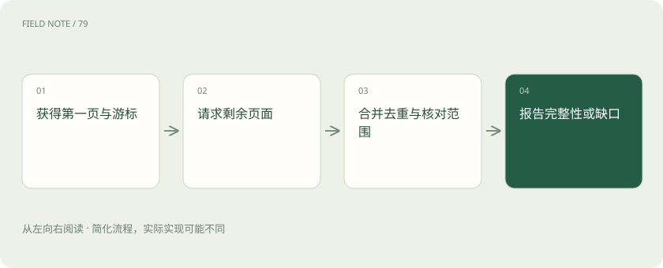

先读哪些知识
先用一个类比理解
类比只帮助建立直觉，不等同于技术的完整机制。
一图看懂
三种原语不是三个别名
Tools 表达可调用动作，Resources 表达可读取的上下文，Prompts 表达可复用的消息模板。查询活动的工具、客户资料资源和拜访总结模板可以合作，但各自的发现与使用方式不同。
把客户资料塞进提示模板并不会让它保持实时；把模板称为工具也不会自动获得执行能力。设计时先确定需要数据、动作还是交互模板，再决定暴露哪种原语。
这里的分类描述主要交互语义，不能简单等同于安全等级。读取资源也可能暴露敏感信息，工具也可能只是计算一个公开数字；权限判断仍需检查具体对象与数据范围。
输入模式约束什么
工具名称和输入模式为模型提供可选择的接口。客户编号、起止日期、分页数量都应有清楚含义。合法字符串不等于存在的客户，也不代表日期范围符合业务限制。
例如 customer_id=C17、start=2026-08-01、end=2026-10-31，需要约定日期边界和时区。服务端仍须检验客户归属与跨度，不能把模式校验当成全部业务验证。
可选字段要区分省略、空值与空列表。查询条件缺省可能意味着默认时间窗口，空列表可能意味着无筛选；这些差异若不写清楚，模式合法的调用仍会产生超出预期的数据访问。
目录变化必须被处理
tools/list 用于发现当前请求可用的工具，目录可分页，也可能随授权条件和服务升级变化。客户端不宜无限期保存首次发现的描述并假设以后永不改变。
若服务支持目录变更通知，客户端应按实现处理刷新；即使没有通知，调用失败后也需要合理更新。换员工登录后尤其不能继续显示前一员工的可用工具集合。
缓存工具描述时应考虑身份与版本变化。工具重命名或输出字段改变后，模型沿用旧说明可能持续发出错误请求；刷新目录后还需避免把旧结果套入新格式解释。
图解：从目录到实际调用

一次具体只读调用
Host 将“总结 C17 最近活动”拆成只读查询；Client 发现 crm_activity_search，并核对参数；服务端验证员工所属团队，然后查询 C17 的活动记录。
返回三条活动、覆盖区间及下一页标记后，Host 才进行总结。若结果有下一页，不能把三条误写为全部活动；如果权限仅允许当前团队，报告要保留这个范围说明。
查询轨迹中的客户编号应来自可信上下文，而不是模型自行猜测。存在同名客户时应要求消歧；错误地查到另一家公司，即使接口返回成功也属于严重业务失败。
结果不只是自然语言
工具可以返回文本与结构化内容等结果。输出模式帮助约束结构化结果，但应用仍需要核对业务含义、截断信息及时间范围。展示层文字不能代替可审计的事实字段。
例如 total_visible=3 只表示当前访问范围中的数量，并非公司全部活动。报告应区分记录时间与查询时间，否则昨天生成的缓存可能被描述成刚刚发生的事实。
结构化结果中的字段名也需要语义约定。金额是否含税、日期是否为最后更新时间、计数是否已去重，都会改变摘要；只有字段类型正确不能证明报表口径一致。
协议错误与业务错误
请求格式错误、未知工具和业务执行失败不是同一个问题。工具正常返回也可能携带执行错误信息；模型不应因为收到了响应就宣布查询成功。
C17 不存在、无权访问以及 CRM 暂不可用，应以不泄漏敏感信息的方式区分处理路径。权限拒绝不应通过换工具名绕过，临时不可用则需要受控重试或明确说明缺口。
服务可以提供有限的错误说明以保护对象存在性。客户端应尊重这种信息边界，不应反复试探相邻编号来推断隐藏客户；向用户报告无法访问即可，不必猜测真正原因。
与模型函数调用的关系
模型供应商的函数调用描述模型如何提出结构化调用意图；MCP 描述应用与能力服务之间的交互。Host 可以把 MCP 工具映射为某个模型接受的函数描述。
这层映射需要处理名称、参数和结果差异。使用函数调用的应用可以完全不用 MCP；使用 MCP 的界面也可由按钮触发。两者分别解决模型表达和系统互操作问题。
映射层还可能删减描述以适配上下文预算。若关键单位或限制被删去，模型就失去正确调用依据；应优先保留业务约束，不能只留下易读但含糊的工具名称。
图解：分页结果的有限交付

契约验收看完整轨迹
验收应保存脱敏的工具目录版本、实际参数、授权范围、结果字段及最终报告。只截图模型最后一句“查询成功”，不能证明它调用过正确接口。
让测试客户同时含跨团队记录、空记录和超过一页的记录，能检验范围与分页处理。此类测试比让模型复述工具说明更能揭示真实集成质量。
最终报告引用的事实应能回溯到某次有效结果。目录里存在一个工具、模型想调用它以及服务器真正执行成功，是三个不同证据点，验收不能相互替代。
放在一起对比
| 组成部分 | 负责什么 | 边界或修正方向 |
|---|---|---|
| Tools | 执行调用动作 | 描述不等于已执行 |
| Resources | 提供可读取上下文 | 可读不等于无敏感性 |
| Prompts | 提供消息模板 | 模板不等于实时事实 |
放进真实场景
crm_activity_search 首次返回二十条记录和下一页标记。助手继续取回剩余七条，去重后报告二十七条；若第二页失败，则报告“已获取二十条，查询未完整”，而不宣称全部完成。
别踩这个误区
想一想
工具只返回第一页时，能把当前条数写成客户全部活动数吗？
不能。需要依据分页标记继续获取或明确截断与可见范围；响应成功不能证明数据完整。
关联阅读
资料与边界
本文为原创知识讲解。类比和图示经过简化；示例数字不代表实测或报价。整理日期：2026-11-05。文末列出对应技术的原始资料，具体功能与版本支持请以原文为准。
按完整目录逐篇阅读